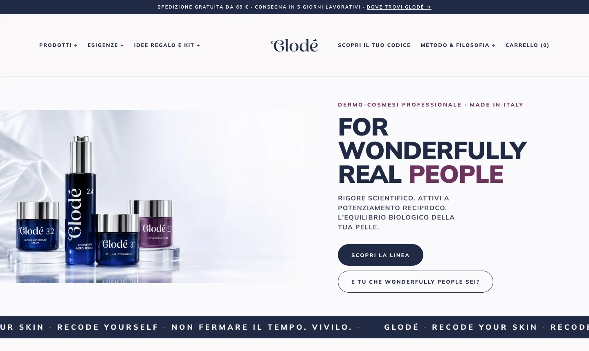

-
Aprite la pagina su glode-lab.it e ricaricatela.
 1
1
Quello che vedo lo vede anche una cliente?
Sì: il sito è pubblico. Potete fare tutto quello che farebbe una cliente, compreso mettere prodotti nel carrello: nessun ordine parte finché non si completa un pagamento.
-
Fate una foto dello schermo della parte che non torna.
2
-
Scriveteci dove, cosa avete visto e con che cosa guardavate.
Cosa scrivo?
- dove: la pagina, e se potete l’indirizzo che si legge in alto nel browser (e il nome del prodotto);
- cosa avete visto, e cosa vi aspettavate;
- con che cosa guardavate: computer o telefono, e quale browser.
Se avete appena cambiato qualcosa nel pannello, ditelo. E non cancellate niente per rimediare: si sistema meglio partendo da com’è.
-
Dal pannello: «Negozio online», poi «⋯» accanto a «Modifica tema» e «Visualizza».
 Non qui
Non qui
4
Non qui
Non qui
4
Perché da qui?
«Visualizza» apre il sito con il tema pubblicato, lo stesso che vedono le clienti. «Modifica tema» e «Modifica codice» no: cambiano il sito (vedi Cosa non toccare).

Sul sito
Differenze volute, che non sono errori: il carrello e il pagamento sono quelli di Shopify; i filtri del catalogo cambiano pagina; nel catalogo il prezzo è «94 €», nella scheda «94,00 €»; la pagina «Dove trovi Glodé» non ha la mappa (ogni centro apre Google Maps).